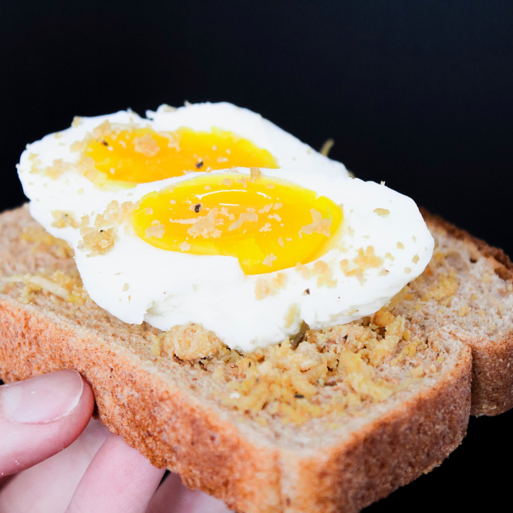

You take the peace offering and start to eat the beautifully prepared egg. It tastes amazing! It almost tastes too good though and you're worried that you'll get addicted if you don't stop. No other meal you could possibly ever have can ever amount to this egg and you're not sure you're ready to ruin your food expectations like that for the rest of your life. You can leave now, or meow for more egg, which you already see him offering you. What do you do?